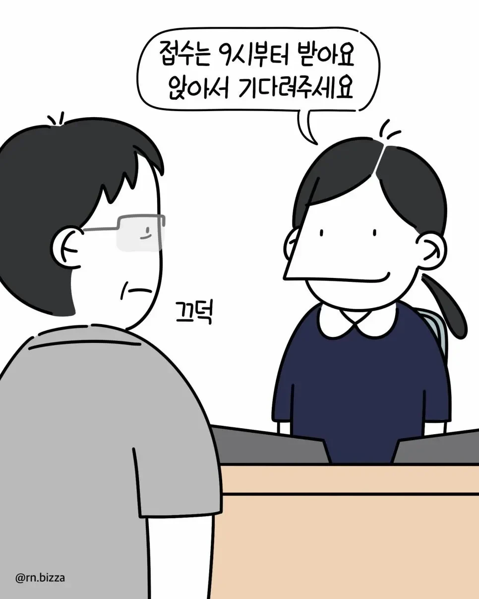
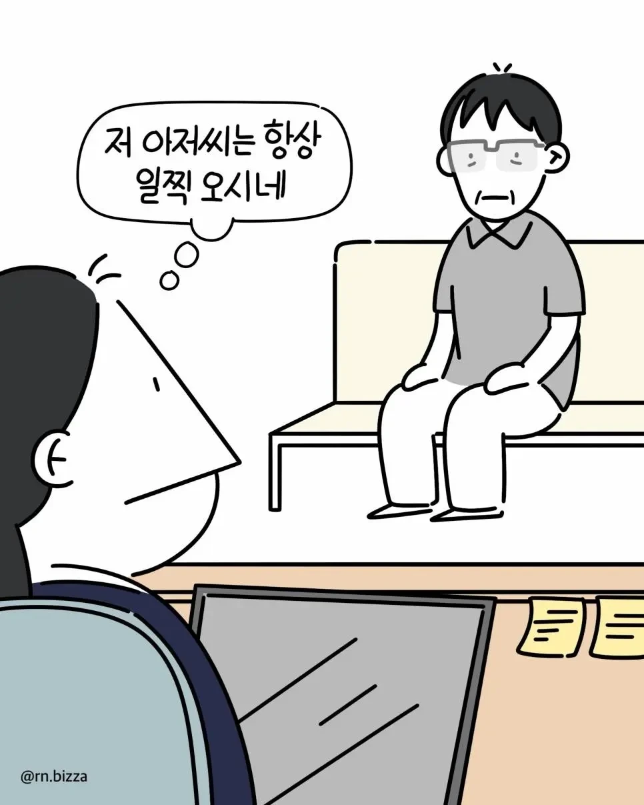
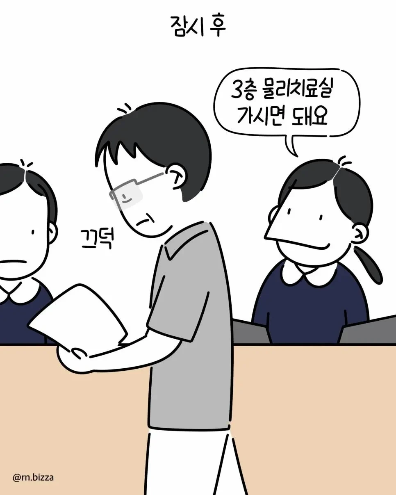
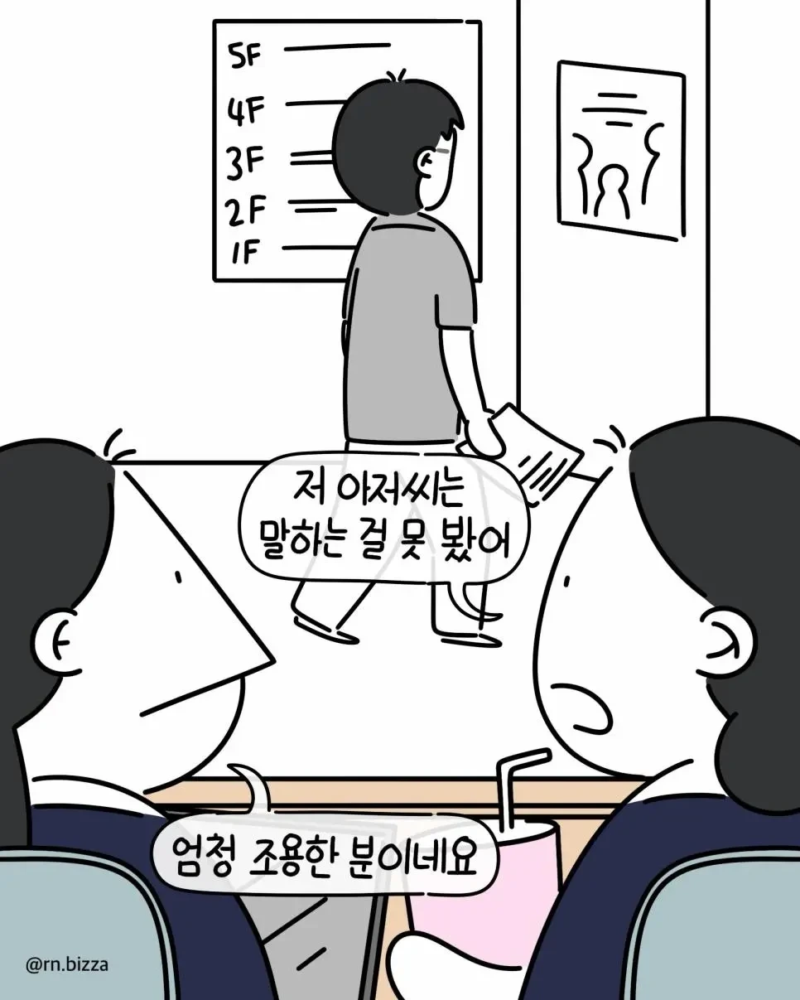
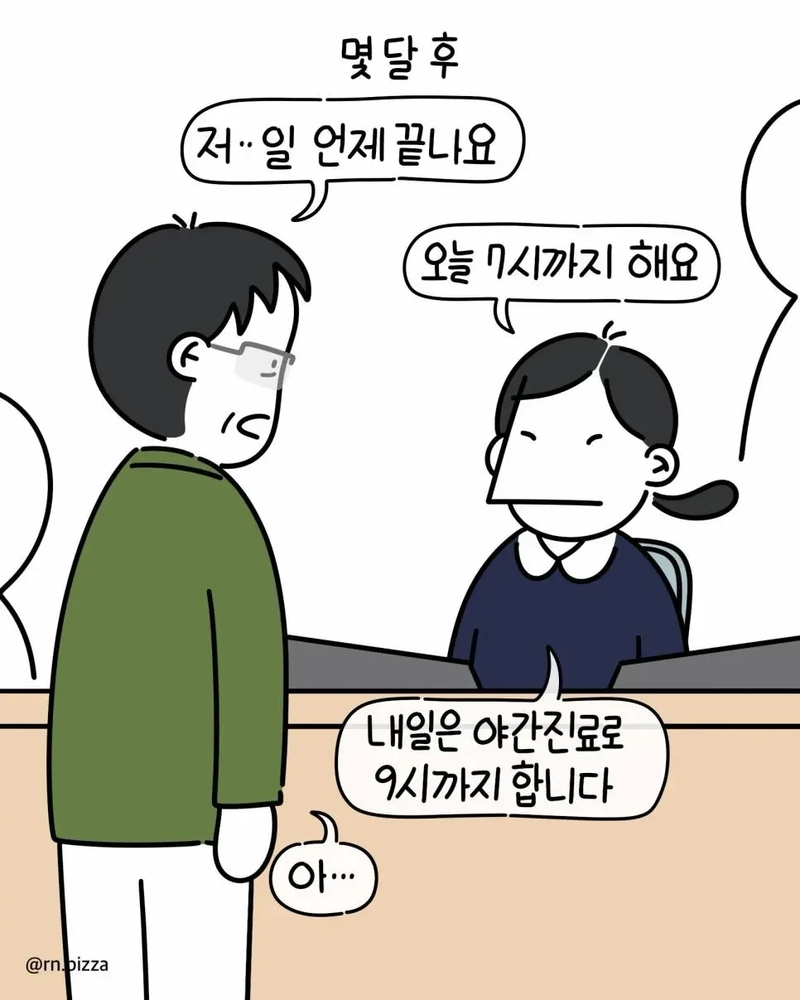
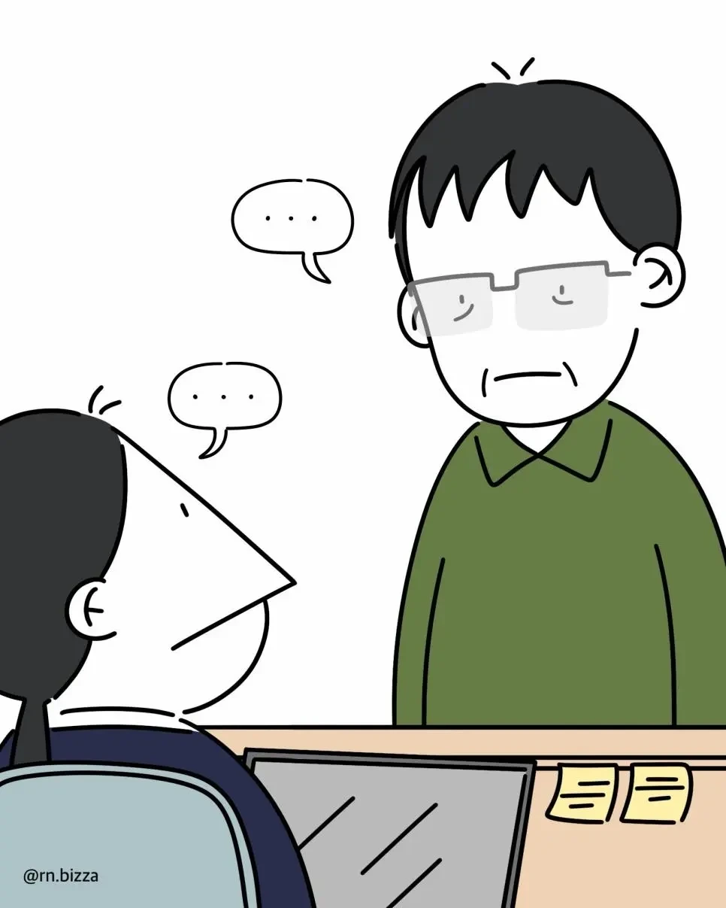
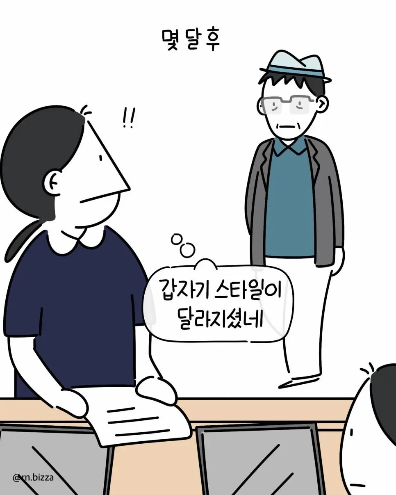
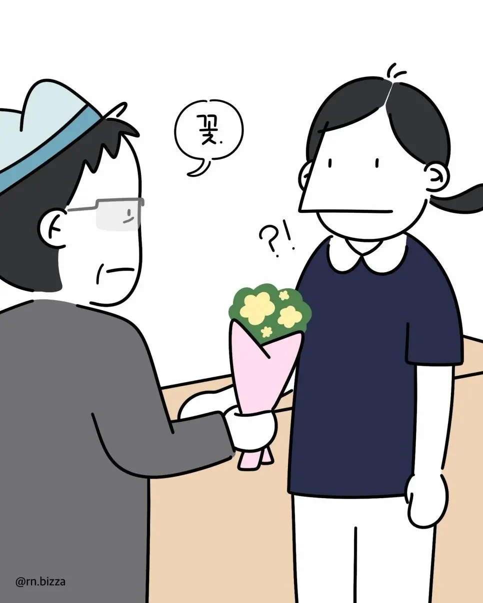
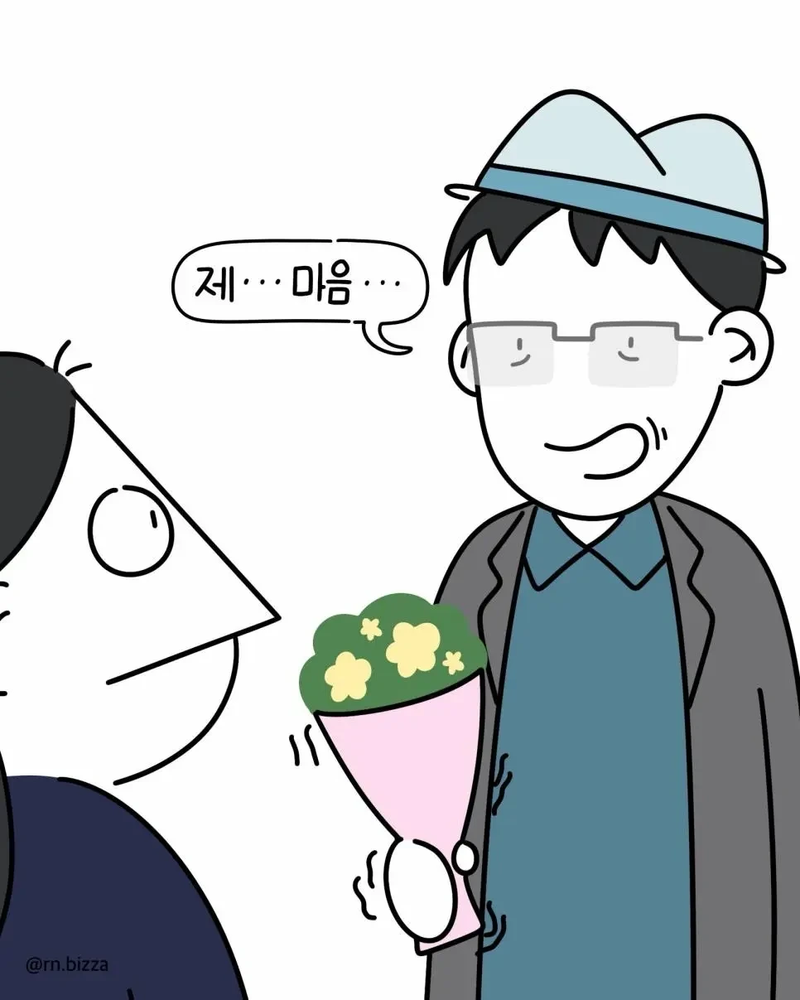
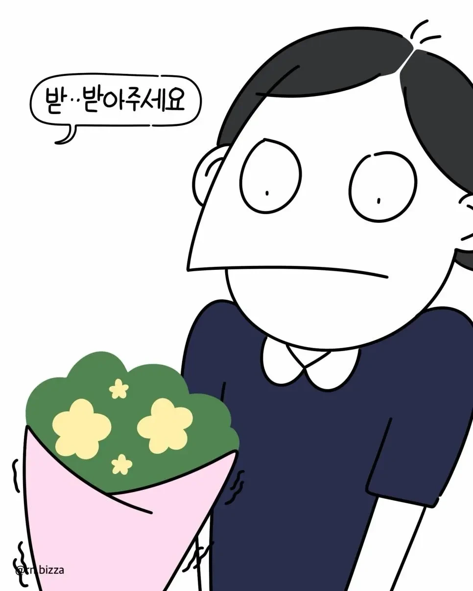

일 언제 끝나냐고 물어본게 그런 뜻이었냐고










일 언제 끝나냐고 물어본게 그런 뜻이었냐고
댓글
수집 당시 댓글 13개
쇼갱 · 1 일 전
영 피프티
악력왕랄프 · 1 일 전
회사에서코고는중 · 1 일 전
간호사 하는거 빡세구나
앙제컷 · 1 일 전
나이먹으면 먹을수록 메타인지가 없어지나보다
로보트 · 1 일 전
중풍으로 인한 실어증이 아니었냐고
0w0 · 1 일 전
걍 과묵한 젠틀맨인줄 알았더니 ㅋㅋㅋㅋㅅㅂㅋㅋㅋㅋㅋ
코노 · 1 일 전
그림체가 변해버리네 ㅋㅋㅋ 나도 예전에 입원해있을때 같은병실 할배가 화장실 가려다가 자기자리에서 똥을 부왘 지렸는데.. 그거 치우러 어린 간호사가 오고 묵묵히 치우는데 똥지리고 울고 앉아있다가 지 똥 치우는 간호사보고 혹했던건지 곱다는 소리 연발하다 급기야 데이트하자며 연락처 묻는걸 직관한적이 있음. 곱게 늙어야 한다..
구동매 · 1 일 전
갑자기 원피스가 되어버림
아구찜국밥 · 1 일 전
예전에 퇴근할 때 좌석이 다 비어 있어서 끝자리에 앉았음 잠시 뒤 여자 하나가 내 맞은편 대각선 끝자리에 앉았는데, 칸에 들어온 늙은이가 처음엔 여자 있는 쪽 중간 자리에 앉더니 갑자기 여자 바로 옆으로 이동해서 앉음 내가 내릴 때까지 계속 그 상태였고, 내리면서 여자 얼굴 힐끔 봤더니 벌레 씹은 표정으로 늙은이를 노려보고 있었음 늙은이는 아무 일도 없는 척 앞만 보고 있었음
OhBro · 20 시간 전
잉 곱지
뿌아악아자자잣아자잣 · 1 일 전
행운의편지 · 1 일 전
내나이가 어때서~ 사랑에 나이가 있나요~~
Nerzhul · 19 시간 전
자연재해네 전혀 예측할수없는타이밍에 일방적인 감정의 배설이라니..